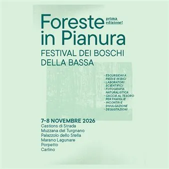

da sab 7 nov a dom 8 nov
Foreste in Pianura - Festival dei Boschi della Bassa Prima edizione
Con l’arrivo dell’autunno, i boschi della Bassa Pianura Friulana si trasformano in scenari suggestivi da esplorare passo dopo passo. Foreste in Pianura è il festival che invita a scoprire il patrimonio naturalistico dei boschi planiziali, preziosi scrigni di biodiversità che…
 Indicazioni
Indicazioni
- Costi e prenotazioni
- Costo non indicato · Prenotazione non indicata
- Programma
- Programma da verificare. Apri la fonte ufficiale per orari e possibili aggiornamenti.
- In caso di maltempo
- Nessuna indicazione specifica pubblicata.
- Note
- Acquisito automaticamente dalla fonte.
L’EVENTO
Descrizione completa
Con l’arrivo dell’autunno, i boschi della Bassa Pianura Friulana si trasformano in scenari suggestivi da esplorare passo dopo passo. Foreste in Pianura è il festival che invita a scoprire il patrimonio naturalistico dei boschi planiziali, preziosi scrigni di biodiversità che conservano l’eredità dell’antica foresta che un tempo ricopriva il territorio friulano.
Il 7 e 8 novembre 2026 , per due giornate, i partecipanti potranno vivere un ricco programma di attività all’aria aperta tra escursioni guidate, itinerari in bicicletta, laboratori scientifici, incontri divulgativi, esperienze di fotografia naturalistica e iniziative dedicate a famiglie e bambini.
L’evento coinvolge i comuni di Castions di Strada, Muzzana del Turgnano, Palazzolo dello Stella, Marano Lagunare, Porpetto e Carlino, offrendo l’opportunità di entrare in contatto con ambienti naturali unici e spesso poco conosciuti, tra sentieri ombreggiati, radure e paesaggi dai colori autunnali.
Accanto alle attività escursionistiche, non mancheranno momenti dedicati all’approfondimento scientifico, alla scoperta della fauna e della flora locale, alla fotografia e ai sapori del territorio, per un’esperienza capace di coniugare conoscenza, natura e convivialità.
Un’occasione speciale per rallentare il ritmo, immergersi nella quiete del bosco e riscoprire uno dei patrimoni ambientali più preziosi della regione, guidati da esperti e appassionati in un viaggio tra natura, cultura e biodiversità.
Scopri QUI il programma completo e le informazioni per prenotare!
Evento promosso da Fondazione Natura 7, con la collaborazione di Associazione Culturale Artetica, Italia Nostra APS, Associazione Globe Italia, Sognando in Bici, Amici del Bosco Brussa, Ass. CamminiAmo Castions di Strada, Osteria in Tressa e con il contributo di Vini Bortolusso.
IL PROGRAMMA
Programma e orari
Appuntamenti raccolti dalle fonti elencate. Dove manca un orario, non è ancora disponibile in questa scheda.
Programma pubblicato
- Dal 2026-11-07 al 2026-11-08
INFORMAZIONI UTILI
Prima di partire
- Controllare la fonte prima di partire.
ORGANIZZAZIONE